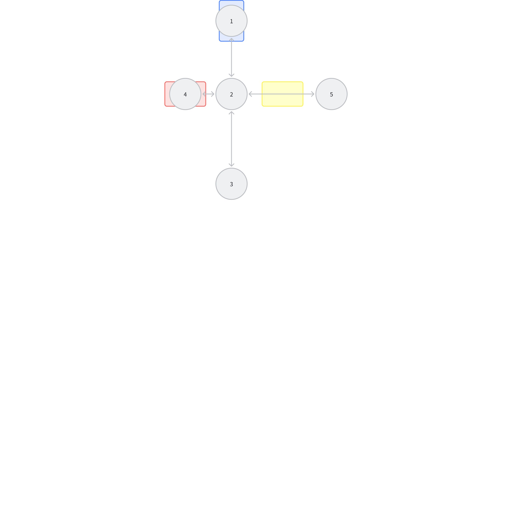
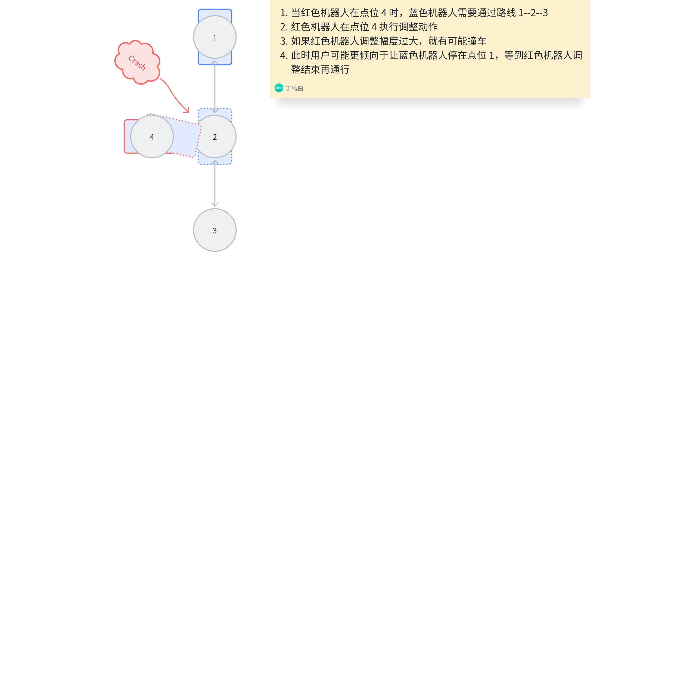

Wiki table of contents
Wiki table of contents
调度采用新算法的说明文档
RDSCore 功能文档框架
知识库动态
调度系统介绍
参数及错误码
场景（Scene）
机器人（Robot）
设备（Device）
运单（Order）
动作块回调
备份与热备份
仿真
调度逻辑
基础框架
多车调度（G-MAPF 算法）
综合文档
功能文档
基础功能
进阶功能
个性功能
局部解死锁（OnlyLocalArea）
定制化搜路（CustomizedAstar）
动态停靠（MovablePark）
避让规划优先级（mapfPriority）
多电梯绕路（G-MAPF-MultiLifts）
自定义资源管控逻辑
自动配置功能
高级组功能
MAPF 功能（v0.1.8.220917后不再维护）
RHCR多车路径规划算法
日志分析
RDSCore FAQ
Roboshop 中调度的使用
功能授权
相机调试工具需求
服务器选型
部署与更新
库位部署
触发器
pytest 测试
Core 发布说明
header-v2
SEER Robotics
自定义资源管控逻辑
Last updated: Feb 19
Log In or Sign Up
自定义资源管控逻辑
什么是资源管控
G-MAPF 默认的资源管控逻辑
默认逻辑的缺陷
允许自定义的资源管控效果
自定义实施方法
在订单中使用 adjustInfo 字段实现自定义调整动作范围示例
去目标库位执行任务并指定机器人在特定点位的调整动作范围（圆形范围）
去目标库位执行任务并指定机器人在特定点位的调整动作范围（凸多边形范围）
实例
自定义资源管控逻辑
Modified February 19
什么是资源管控
如下图所示，1 2 3 4 5 代表四个点位，红绿黄矩形代表三台机器人，资源管控指的是机器人位于不同位置时，需要占用哪些空间资源（点位、线路等）
0 results
Board

G-MAPF 默认的资源管控逻辑
依旧以上图为例阐述：
1.
红车：
a.
若机器人在点位 4 做原地任务，那么只占用点位 4 这一个点位资源，
此时蓝车可以通过路线
1-2-3
b.
若机器人在执行从点位 2 走到 4 的任务，那么在机器人上报这个任务完成前，会占用点位 2 和 4 两个点位资源，
此时蓝车不可以通过路线
1-2-3
，只能停在点位 1；红车上报任务完成后，红车释放点位 2 资源，只占用点位 4 一个点位资源，
蓝车此时可以通过路线
1-2-3
2.
黄车：
占用点位 2 和 5 两个点位资源，蓝车此时无法通过路线
1-2-3
默认逻辑的缺陷
1.
对于上述逻辑 1-a 的情形，如果此时红车在做识别、二次调整等动作，动作幅度不确定，此时蓝车在路线
1-2-3
上行走，存在撞车风险
2.
对于上述逻辑 1-b 的情形，如果此时红车只是正常到点动作，不涉及二次调整，那么这个资源的释放速度就有点慢，一方面观感不好，另一方面也会降低效率，甚至造成拥堵
允许自定义的资源管控效果
1.
对于缺陷 1，希望达到的效果如下图
0 results
Board
